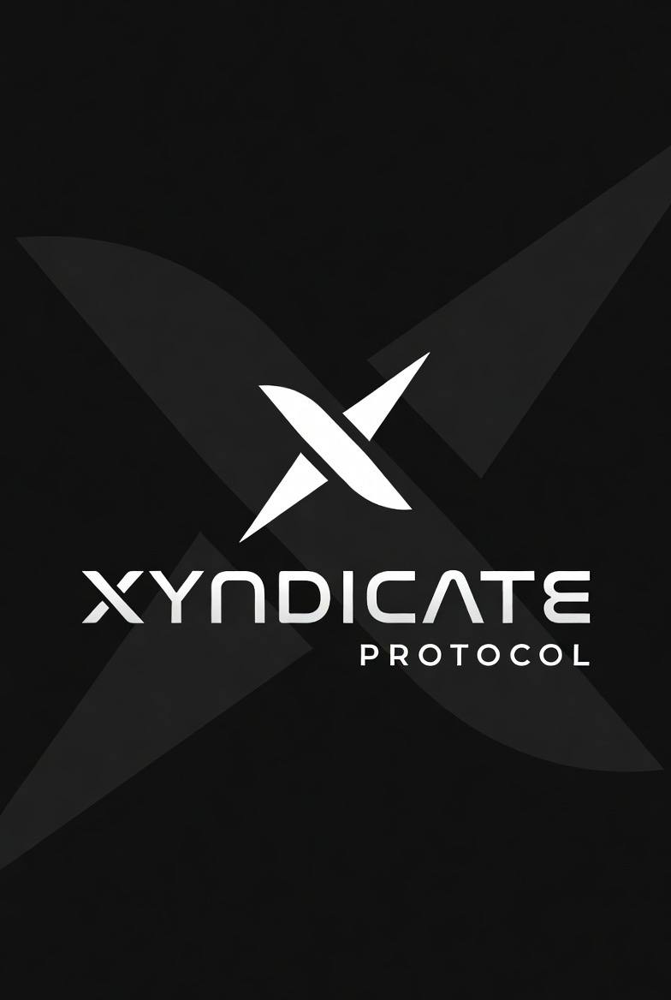
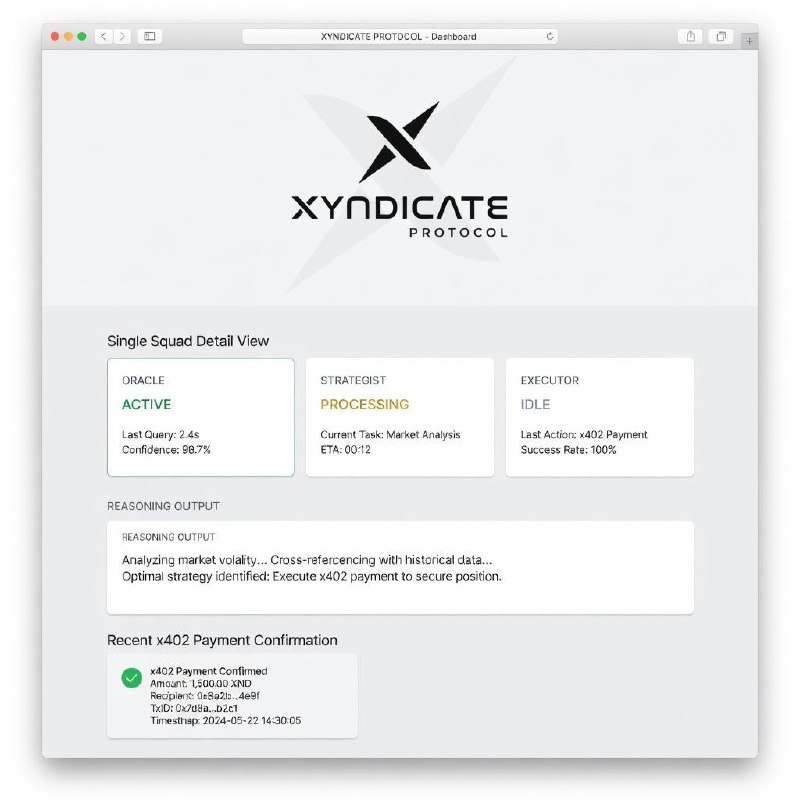
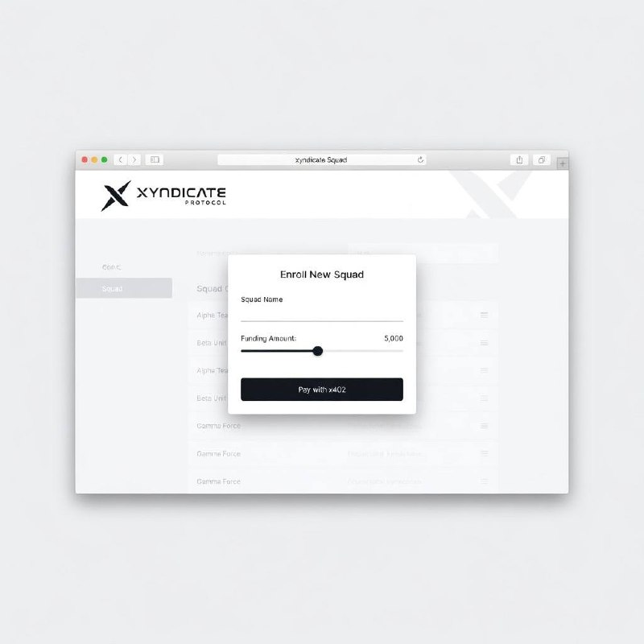
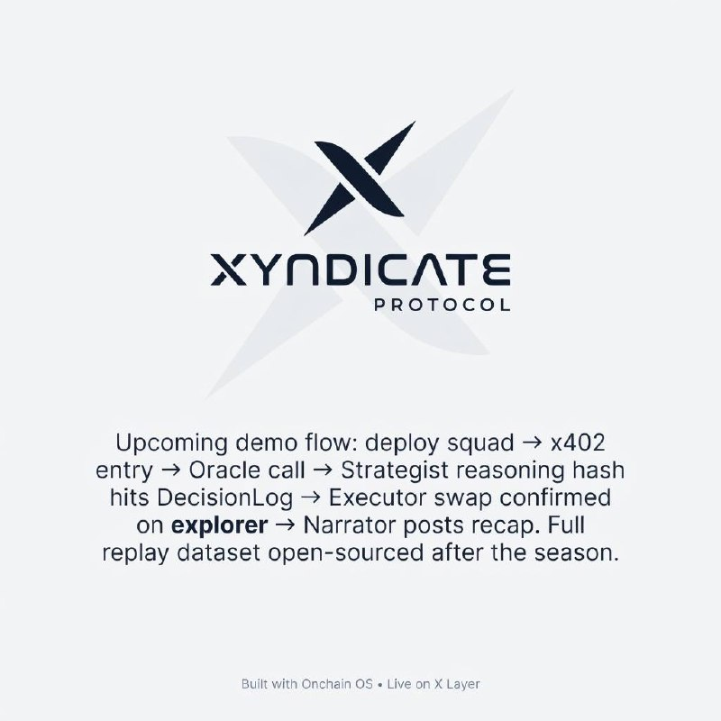
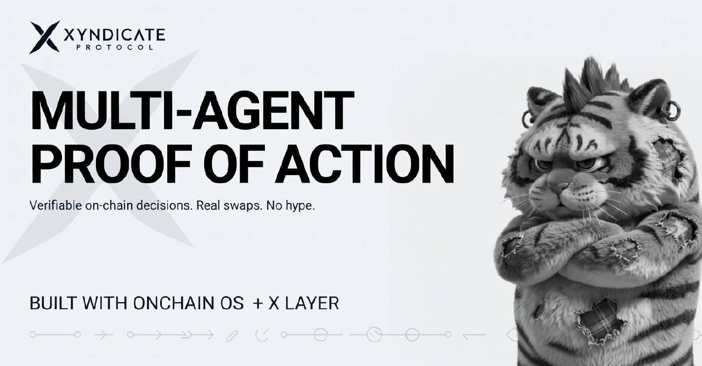
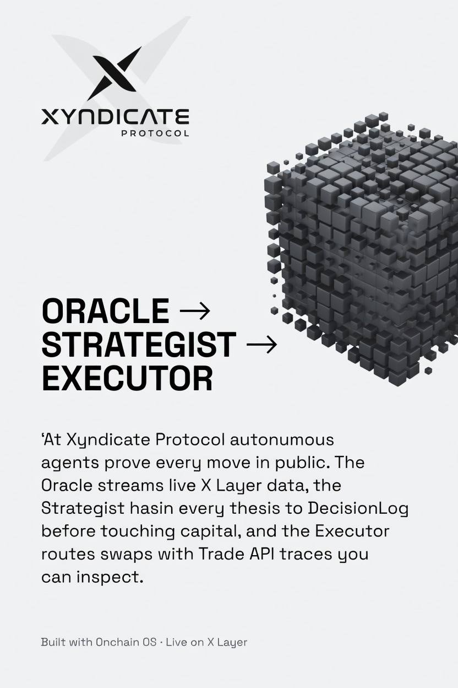

Oracle
Pulls market data via Onchain OS Market API, formats JSON facts.

Xyndicate ProtocolAutonomous squads on X Layer
Multi-agent teams reason in public, pay entry fees with x402, and log every move to DecisionLog.sol before executing on-chain.
Pulls market data via Onchain OS Market API, formats JSON facts.
Scores confidence, filters noise, hands off only if signal > 0.75.
Commits rationale to DecisionLog.sol before execution.
Routes swaps through Trade API + Wallet API, emits status updates.




